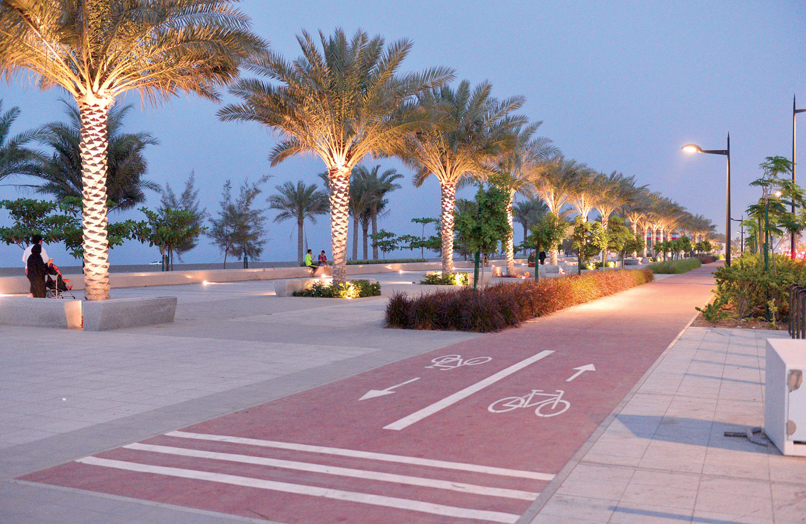
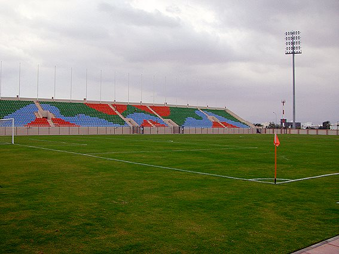
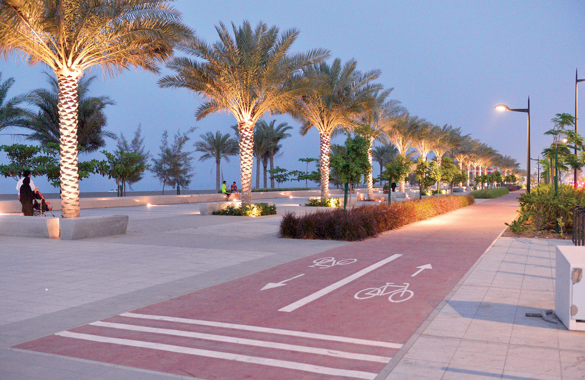
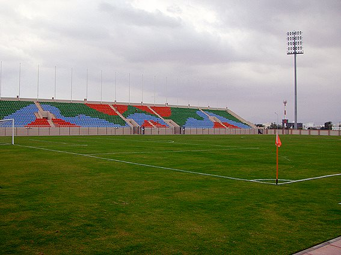

السيب
تقع السيب إلى الغرب من ولاية بوشر وتطل على خليج عمان بساحل طولة 50 كيلو متر ،وتتكون من24 قرية وبلدة .
قديماً ، كانوا يسمونها (دما والسيب) نسبة إلى سيب المياه وتدفقها ، وإلى جانب ما بها من آثار تاريخية فهي اليوم (جوهرة العاصمة) لما حظيت به من نهضة عمرانية شاملة – كمثيلاتها خلال الأعوام الماضية .
ويوجد في السيب حوالي 140 مسجدا ، وتضم الولاية عدد من المعالم التاريخية ، أهمها (قلعة الخوض) و ( أبراج الجفنين – الرسيل – الخرس – السليل – وأبراج وادي الحية – وسورين ) .
 


